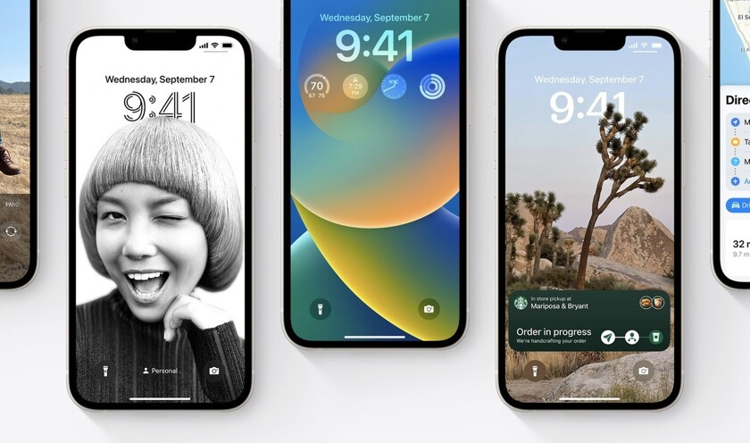
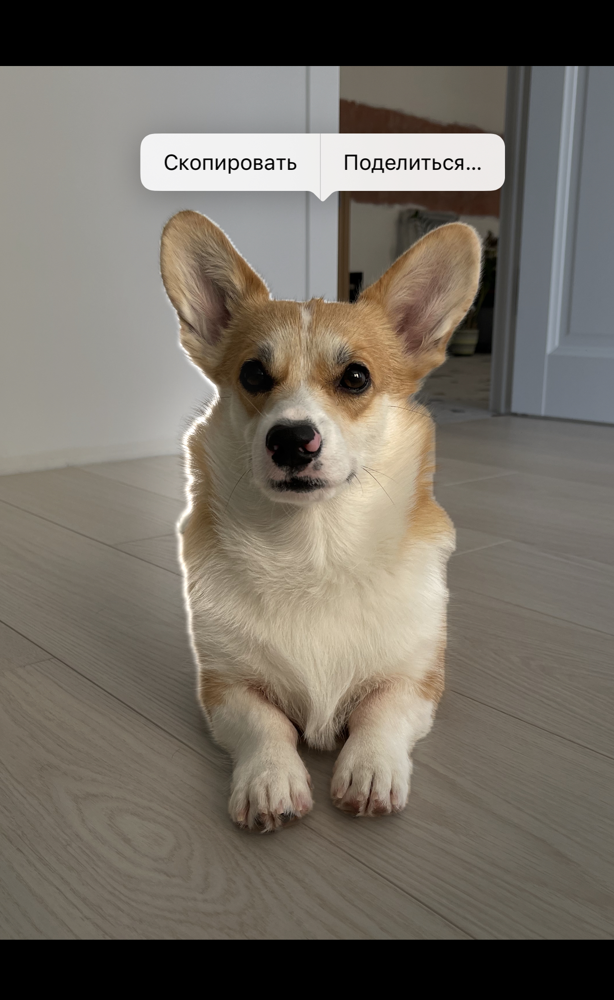

Как убрать фон с фото на iOS 16?

Каждый год, Apple дает все меньше новых функций старым устройствам.
Так получилось и в этом году.
Возможность скопировать объект на фотографии есть не у всех моделей Айфонов, которые поддерживают iOS 16.
Вот полный список устройств:
- iPhone SE 2-го поколения.
- iPhone SE 3-го поколения.
- iPhone XR.
- iPhone XS.
- iPhone XS Max.
- iPhone 11.
- iPhone 11 Pro Max.
- iPhone 12.
- iPhone 12 Pro.
- iPhone 12 Pro Max.
- iPhone 13 mini.
- iPhone 13.
- iPhone 13 Pro.
- iPhone 13 Pro Max.
- iPhone 14.
- iPhone 14 Plus.
- iPhone 14 Pro.
- iPhone 14 Pro Max.
Чтобы скопировать объект с изображения или фотографии, вам потребуется выполнить следующие действия:
- Загрузите интересующую вас картинку в приложение “Фото” или сделайте фотографию.
- Перейдите в “Фото”.
- Откройте изображение.
- Задержите палец на объекте, который хотите скопировать.
- Как только нейросеть определит его границы, он подсветится аккуратной анимацией.
- В контекстом меню нажмите “Скопировать” или перетяните его с помощью функции Drag’N’Drop в другое приложение.

Такие картинки можно даже отправлять в мессенджеры друзьям!